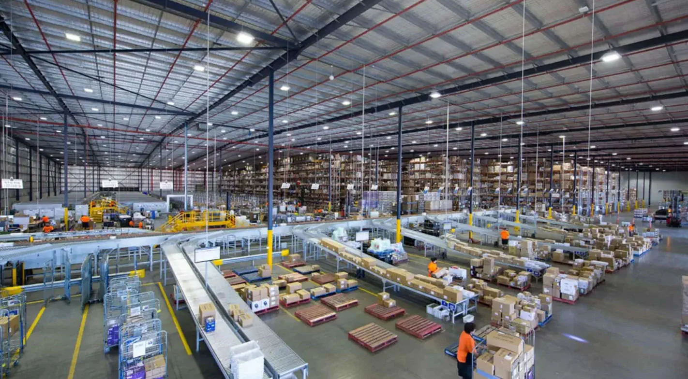

Warehouse Automation Case Study: How a Mega ASRS System Reduced Labor and Increased Efficiency by 65%
This case study explains how a mega-scale ASRS warehouse automation system significantly reduced labor dependency while increasing operational efficiency by 65%. It demonstrates how intelligent warehouse design, AI scheduling, and high-density automation transform traditional logistics operations into fully optimized smart warehouse systems.

Summary
This case study explains how a mega-scale ASRS warehouse automation system significantly reduced labor dependency while increasing operational efficiency by 65%.
It demonstrates how intelligent warehouse design, AI scheduling, and high-density automation transform traditional logistics operations into fully optimized smart warehouse systems.
Technology
- Automated Storage and Retrieval System (ASRS) high-density automation system
- AI-based warehouse scheduling engine
- Stacker crane + shuttle hybrid automation
- Multi-zone distributed storage architecture
- Real-time task allocation system
- Conveyor + AGV integration layer
- WMS / WES / ERP system integration
- Predictive logistics optimization algorithms
- Smart warehouse monitoring system
Challenge
Traditional warehouse operations face critical inefficiencies:
High dependency on manual labor
Increasing labor cost pressure
Low picking efficiency under peak demand
Frequent operational delays
Limited scalability of manual systems
Poor real-time inventory accuracy
Inefficient warehouse space utilization
These issues significantly reduce profitability and scalability.
Solution
The ASRS warehouse automation solution solves these challenges through:
Fully automated storage and retrieval system
AI-driven scheduling and task allocation
High-density vertical storage architecture
Multi-zone operational optimization
Conveyor and AGV integration systems
Real-time warehouse data synchronization
Centralized WMS/WES control platform
This creates a fully automated and intelligent warehouse ecosystem.
Workflow & Layout
Incoming goods are scanned and digitized
AI system assigns optimized storage location
ASRS system stores goods automatically
Inventory is distributed across multiple zones
AI scheduling engine continuously balances workload
Retrieval tasks are dynamically assigned
Automated equipment executes picking and transport
Outbound shipment is completed with minimal human intervention
Results & ROI
- Labor reduction: up to 65%
- Operational efficiency: +60%–70% improvement
- Throughput increase: significantly higher processing capacity
- Inventory accuracy: greatly improved
- Warehouse congestion: reduced to near zero
- ROI improvement: faster payback due to labor savings
- Space utilization: maximized through vertical storage
Equipment List
- ASRS stacker crane system
- Shuttle-based storage units
- High-density racking systems
- Conveyor and sorting lines
- AGV / AMR transport vehicles
- AI warehouse scheduling system
- WMS / WES / ERP integration platform
- Smart sensors and scanning systems
Project Overview / Opening
Warehouse automation is no longer optional—it is a core requirement for modern logistics competitiveness.
This case study demonstrates how a mega ASRS system transforms traditional labor-heavy warehouses into highly efficient, AI-driven smart logistics centers.
Key Points
- Labor reduction is a direct result of system automation level
- AI scheduling eliminates manual coordination bottlenecks
- Multi-zone ASRS design improves throughput stability
- High-density storage reduces footprint requirements
- System integration is more important than single machines
- Real-time data control ensures operational accuracy
- ROI is driven by both labor savings and efficiency gains
Implementation / Workflow
Implementation of warehouse automation includes:
Operational analysis and labor flow mappingWarehouse layout redesign for automationASRS system design and configurationAI scheduling system deploymentEquipment integration planningWMS/WES system integrationFull system simulation testingCommissioning and performance optimization
Customer Value / Results
This warehouse automation system delivers:
Significant reduction in labor costImproved operational stability and consistencyFaster order fulfillment cyclesHigher warehouse throughput capacityBetter inventory control and visibilityReduced operational risk and human errorStrong ROI through efficiency gains
Conclusion / Next Step
Warehouse automation is a strategic investment that directly impacts cost structure and operational efficiency.
A well-designed ASRS system can significantly reduce labor dependency while improving overall logistics performance.
If you are planning a warehouse automation project, we can support you with:
System design and engineeringROI and cost estimationLayout optimizationFull project execution
SEO Title
Warehouse Automation Case Study | ASRS System Reduces Labor by 65% & Boosts Efficiency in Smart Warehouses
SEO Description
Explore a real warehouse automation case study showing how a mega ASRS system reduced labor costs by 65% while significantly improving operational efficiency. Learn how smart warehouse design, AI scheduling, and automated logistics systems transform modern industrial operations.
SEO Keywords
- warehouse automation case study
- labor reduction
- ROI warehouse automation
- smart warehouse
- ASRS system
- warehouse efficiency improvement
- logistics automation
- industrial warehouse optimization
- AI warehouse system
- automated logistics case study
Related Blog
Start with Your Business Challenge
Tell us about your warehouse, factory, or production requirements. We'll help you explore practical automation solutions and relevant project references.